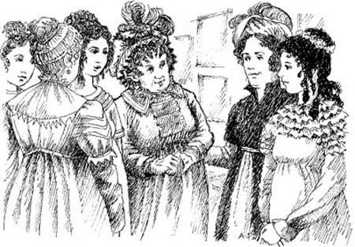
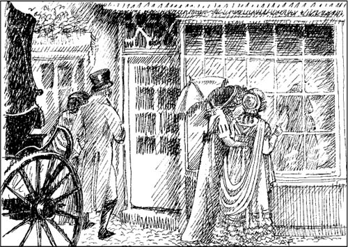
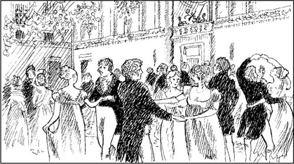
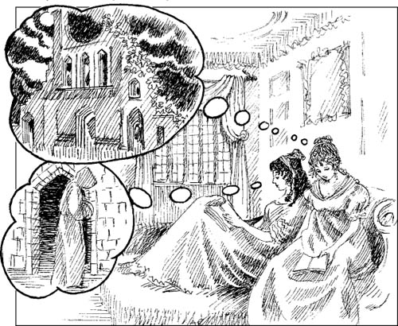

Những người bạn mới của Catherine
Nhà Allens có căn hộ ở Phố Pulteney, gần trung tâm thành phố Bath. Catherine rất yêu thích thành phố này. Cô thích những con đường rộng, những ngôi nhà to và các cửa hiệu. Đường phố Bath luôn tấp nập người qua lại. Và các cửa hiệu thì bày bán toàn những mặt hàng đẹp tuyệt vời.
Vào các buổi tối, mọi người đều đến dự vũ hội. Có các vũ hội ở những tòa nhà lớn gọi là Phòng Trên và Phòng Dưới. Vào các buổi sáng, nhiều người thường đến Phòng Bơm. Họ uống nước. Họ gặp bạn bè.
Có rất nhiều việc phải làm ở Bath. Catherine rất vui.

Hôm đó là tối thứ Sáu. Gia đình Allens đưa Catherine đến Phòng Dưới. Nhiều người đang tụ tập ở đó. Trong các phòng khách, mọi người đang ăn uống, trò chuyện và khiêu vũ.
Bà Allen và Catherine cùng ngồi xuống một chiếc salon lớn. Ông Allen đi xuyên qua căn phòng đông đúc. Catherine muốn nhảy. Nhưng cô không có bạn nhảy. Chẳng mấy chốc, ông Allen quay trở lại, dẫn theo một chàng trai cao đứng đằng sau. Ông giới thiệu chàng trai ấy với Catherine.
‘Đây là anh Henry Tilney,’ ông Allen nói. ‘Tôi quen biết bố anh ấy. Nhưng đã rất lâu rồi tôi chưa gặp lại. Nhà anh Tilney sống tại Tu viện Northanger.’
Henry Tilney cúi chào Catherine. Anh là một người đàn ông rất đẹp trai. Anh khoảng 25 tuổi.
‘Cô Morland có thể cùng tôi khiêu vũ ở điệu tiếp theo chứ,’ anh hỏi.
Catherine cúi chào. Anh Tilney nắm tay cô và họ cùng nhịp bước. Catherine rất vui. Cô đang nhảy với một người đàn ông đẹp trai! Khi điệu nhạc kết thúc, hai người cùng ngồi xuống.
‘Anh Tilney, anh biết rõ thành phố Bath chứ?’ Catherine hỏi.
‘Tôi đã từng đến Bath nhiều lần,’ anh Tilney đáp lời. ‘Nhưng tôi là một giáo sĩ của một nhà thờ cách đây nhiều dặm đường.’
Anh Tilney mỉm cười với Catherine. ‘Giờ đến lượt tôi hỏi cô vài câu,’ anh nói.
Catherine cười. ‘Câu hỏi gì vậy anh?’ cô hỏi.
Anh Tilney lại mỉm cười và nói nhanh hơn.
‘Cô đã đến Bath lâu chưa? Cô đã đến Phòng Trên chưa? Cô đã đến rạp hát chưa? Cô có thích Bath không? Những câu hỏi của tôi có thế này đây,’ anh Tilney nói.
‘Tôi mới đến Bath một tuần,’ Catherine nói. ‘Và câu trả lời cho những câu hỏi còn lại của anh là có!’ Và cô lại cười nữa.
‘Cô cười nhạo tôi à!’ anh Tilney nói. ‘Tối nay cô có ghi vào nhật ký về tôi không?’
‘Tôi không viết nhật ký,’ Catherine nói.
‘Tôi không tin điều đó. Tất cả các cô gái trẻ đều có một cuốn nhật ký,’ anh Tilney nói. ‘Sẽ có rất nhiều chuyện xảy đến với cô ở Bath. Cô phải ghi nhớ tất cả chúng!’
Sáng hôm sau, Catherine và bà Allen đi đến Phòng Bơm. Anh Tilney không có mặt ở đó. Nhưng bà Allen gặp được một người bạn của mình. Bà chưa gặp người bạn này, bà Thorpe, trong nhiều năm.
‘Thế này, bà Thorpe!’ bà Allen nói. ‘Tôi đã không gặp bà mười lăm năm rồi!’
‘Trời ơi, bà Allen thân mến,’ bà Thorpe trả lời. ‘Tôi rất mừng khi được gặp bà! Đây chính là ba cô con gái của tôi. Người lớn nhất là Isabella. Cô bé xinh đẹp chứ? Còn đây là Maria và Anne.’
‘Và đây là tiểu thư Catherine Morland,’ bà Allen nói.
‘Tiểu thư Morland sao?’ Isabella hỏi. Cô nhìn Catherine. ‘Cô có phải là chị của anh James Morland không? Anh Morland chính là bạn của em trai tôi, John. Họ đều đang theo học tại Đại học Oxford. James đã ở nhà chúng tôi vào dịp Noel.’

Chẳng mấy chốc, Catherine và Isabella đã trò chuyện rất vui vẻ. Isabella hơn Catherine 4 tuổi và rất đẹp. Cô ấy mặc một chiếc váy thời trang, rất đẹp mắt.
Isabella hiểu rõ Bath. Cô trò chuyện với Catherine về những vũ hội. Và kể cô nghe về những chàng trai, những cửa hiệu. Catherine lắng nghe, buổi sáng trôi qua thật nhanh.
‘Ngày mai là Chủ Nhật,’ Isabella nói. ‘Buổi sáng, chúng ta sẽ đi lễ nhà thờ. Sau đó, chúng ta sẽ cùng nhau đi đến Cổng Trăng Hoàng gia.’
Kể từ đó, Catherine và Isabella đi đâu cũng có nhau.
Họ thích quần áo.

Họ thích nhà hát, tiệc vũ hội.

Và họ đọc những câu chuyện kinh dị.
Họ thích những câu chuyện khiến mình sợ hãi!

Hai cô gái nhanh chóng trở thành bạn tốt của nhau.
Mục lục
- Trang tiêu đề
- Trang bản quyền
- Mục lục
- Ghi chú về tác giả
- Ghi chú về câu chuyện này
- Nhân vật trong câu chuyện
- 1 Catherine đến Bath
- 2 Những người bạn mới của Catherine
- 3 John và James
- 4 Vũ hội tại Upper Rooms
- 5 ‘Tại sao anh lại nói dối em?’
- 6 Catherine và gia đình Tilney
- 7 Isabella đang yêu
- 8 Đại úy Frederick Tilney
- 9 Isabella và James
- 10 Northanger Abbey
- 11 ‘Cô Morland thân mến của tôi!’
- 12 Đến thăm Woodston
- 13 Một lá thư từ Isabella
- 14 Catherine về nhà
- 15 ‘Cô sẽ lấy tôi chứ?’